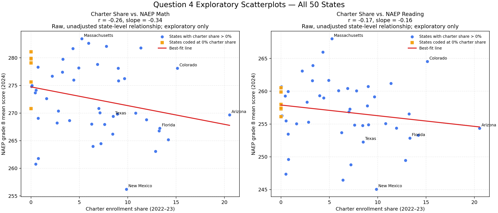

This page presents the first full worked example for Question 4. It is written for public readers who want to see how the question can be explored with real data. If you want the research-question framing first, start with Question 4. If you want the methods labels explained, see How the Questions Are Classified. If you want to see the next stronger follow-up design, read the Question 4 Controlled Analysis Plan. If you want to learn how the code itself works line by line, read the Python Walkthrough.
How does state charter-school enrollment share relate to Grade 8 NAEP performance in mathematics and reading?
This is a predictive (comparative) question, not a causal one. The page looks at whether charter share helps describe or forecast score patterns across states. It does not show that charter schools cause scores to rise or fall (Hernán et al., 2025; Shmueli, 2010).
Plain-language takeaway: states with larger charter sectors tended, on average, to have slightly lower 2024 NAEP scores in this raw comparison, but the relationship was weak and should not be treated as causal.
An earlier exploratory draft accidentally dropped Wyoming and also omitted several states with no charter share. This corrected version includes all 50 states.
States reported at 0% charter share in this version are Kentucky, Montana, Nebraska, North Dakota, South Dakota, and Vermont. Five of those reflect no-charter conditions in the NCES source table; Kentucky is listed directly at 0.0% in the table.
Because coding no-charter states at 0% is a real modeling choice, the page also reports a sensitivity check excluding them. That makes the observed negative pattern smaller, which is exactly why the results are presented as exploratory rather than definitive.
State Charter Enrollment Share and Grade 8 NAEP Mathematics and Reading Scores, 2024

Note. Blue circles represent states with charter enrollment above 0%. Gold squares represent states coded at 0% charter enrollment. Red lines show the fitted linear trend in each panel. The figure displays raw, unadjusted state-level associations and should not be interpreted causally (Hernán et al., 2025; Shmueli, 2010).
Average 2024 Grade 8 NAEP Mathematics and Reading Scores by Charter-Enrollment Band
| Charter-enrollment band | n states | Mean charter share (%) | Mean math score | Mean reading score |
|---|---|---|---|---|
| 0–5% | 24 | 1.56 | 274.31 | 258.11 |
| >5–10% | 17 | 7.71 | 272.00 | 255.95 |
| >10% | 9 | 13.72 | 270.06 | 255.74 |
Note. Charter-enrollment bands were created from the 2022–23 NCES state charter-enrollment percentages. Scores are 2024 state mean scores from the NAEP Grade 8 mathematics and reading assessments (NCES, 2024a, 2024b).
State-Level Data Used in the 50-State Exploratory Analysis
| State | Charter share (%) | NAEP math (2024) | NAEP reading (2024) |
|---|---|---|---|
| Vermont | 0.00 | 275.62 | 257.28 |
| South Dakota | 0.00 | 281.10 | 259.89 |
| North Dakota | 0.00 | 279.77 | 257.39 |
| Nebraska | 0.00 | 279.88 | 256.13 |
| Montana | 0.00 | 279.08 | 260.53 |
| Kentucky | 0.00 | 270.81 | 258.00 |
| Iowa | 0.05 | 274.82 | 260.70 |
| Virginia | 0.10 | 274.99 | 256.26 |
| Washington | 0.43 | 273.67 | 259.27 |
| West Virginia | 0.50 | 260.77 | 247.36 |
| Kansas | 0.52 | 274.14 | 255.49 |
| Wyoming | 0.73 | 278.32 | 259.97 |
| Mississippi | 0.74 | 269.06 | 253.47 |
| Alabama | 0.77 | 261.77 | 249.60 |
| Maine | 1.61 | 272.62 | 255.04 |
| Connecticut | 2.19 | 276.67 | 263.10 |
| Maryland | 2.69 | 268.21 | 258.32 |
| Missouri | 2.84 | 270.36 | 255.28 |
| Illinois | 3.25 | 277.42 | 261.62 |
| New Hampshire | 3.30 | 279.74 | 263.91 |
| Georgia | 3.99 | 268.66 | 259.33 |
| New Jersey | 4.34 | 281.68 | 265.96 |
| Tennessee | 4.42 | 275.98 | 258.97 |
| Indiana | 4.93 | 278.19 | 261.66 |
| Massachusetts | 5.26 | 283.47 | 268.01 |
| Wisconsin | 5.95 | 282.65 | 260.09 |
| South Carolina | 6.27 | 268.01 | 253.69 |
| Alaska | 6.40 | 263.96 | 246.45 |
| Ohio | 6.88 | 278.81 | 260.42 |
| New York | 7.02 | 270.85 | 256.87 |
| Hawaii | 7.13 | 270.04 | 257.28 |
| Oklahoma | 7.23 | 264.45 | 248.79 |
| Oregon | 7.61 | 267.94 | 254.83 |
| Minnesota | 7.80 | 282.09 | 260.07 |
| Arkansas | 8.45 | 266.19 | 254.77 |
| Texas | 8.50 | 269.39 | 252.27 |
| Rhode Island | 8.94 | 269.83 | 257.77 |
| Idaho | 9.01 | 278.10 | 260.73 |
| North Carolina | 9.05 | 275.82 | 254.90 |
| Pennsylvania | 9.66 | 276.25 | 259.15 |
| New Mexico | 9.87 | 256.21 | 245.06 |
| Michigan | 10.83 | 269.98 | 255.06 |
| Utah | 11.36 | 281.79 | 261.19 |
| California | 11.94 | 268.78 | 254.37 |
| Delaware | 12.88 | 263.06 | 249.45 |
| Louisiana | 13.24 | 266.78 | 256.53 |
| Florida | 13.32 | 267.24 | 252.86 |
| Nevada | 14.20 | 265.18 | 253.29 |
| Colorado | 15.14 | 278.11 | 264.54 |
| Arizona | 20.53 | 269.66 | 254.34 |
This page compares states. States differ in many ways besides charter enrollment: poverty, racial/ethnic composition, disability rates, English-learner rates, funding, policy history, and regional context. A raw scatterplot cannot separate charter share from those other influences. That is why the analysis is framed as descriptive/predictive rather than causal (Hernán et al., 2025; Shmueli, 2010).
The next stronger step would be to add adjustment variables such as poverty, race/ethnicity, special education rates, English-learner rates, and per-pupil spending. That would still not automatically make the analysis causal, but it would make the comparison more informative.
Hernán, M. A., Dahabreh, I. J., Dickerman, B. A., & Swanson, S. A. (2025). The target trial framework for causal inference from observational data: Why and when is it helpful? Annals of Internal Medicine, 178(3), 402–407. https://doi.org/10.7326/ANNALS-24-01871
National Center for Education Statistics. (2024a). Digest of Education Statistics 2023, Table 216.90: Public elementary and secondary charter schools and enrollment, and charter schools and enrollment as a percentage of total public schools and total enrollment in public schools, by state or jurisdiction: Selected school years, 2012-13 through 2022-23 [Data set]. U.S. Department of Education, Institute of Education Sciences. https://nces.ed.gov/programs/digest/d23/tables/dt23_216.90.asp
National Center for Education Statistics. (2024b). National Assessment of Educational Progress (NAEP), Grade 8 mathematics and reading state assessments [Data set]. U.S. Department of Education, Institute of Education Sciences. Retrieved August 2, 2026, from https://www.nationsreportcard.gov/DataService/GetAdhocData.aspx
Shmueli, G. (2010). To explain or to predict? Statistical Science, 25(3), 289–310. https://doi.org/10.1214/10-STS330
{kind=link}